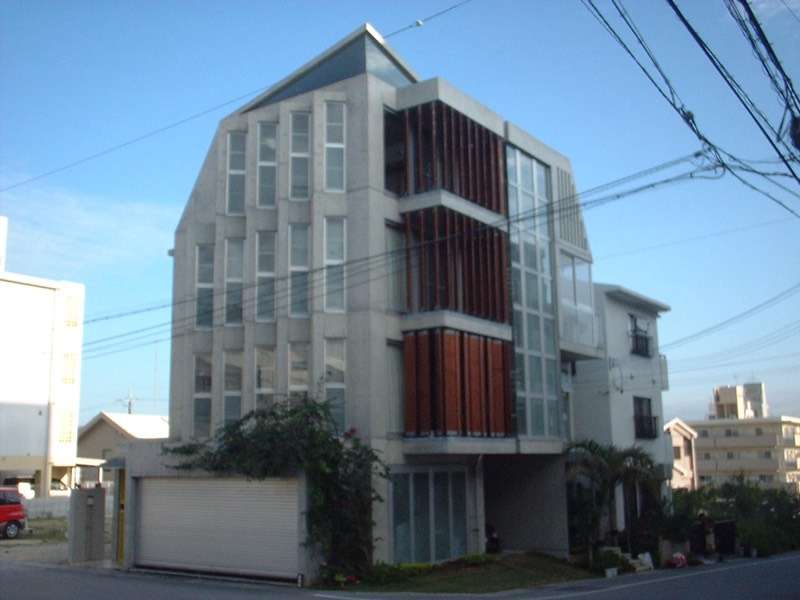
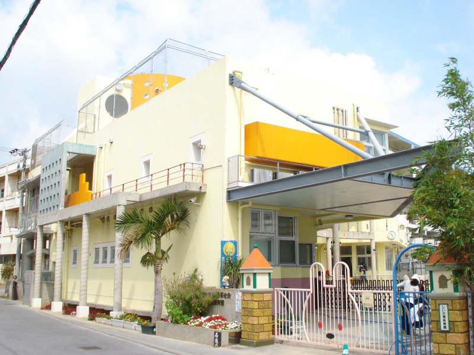
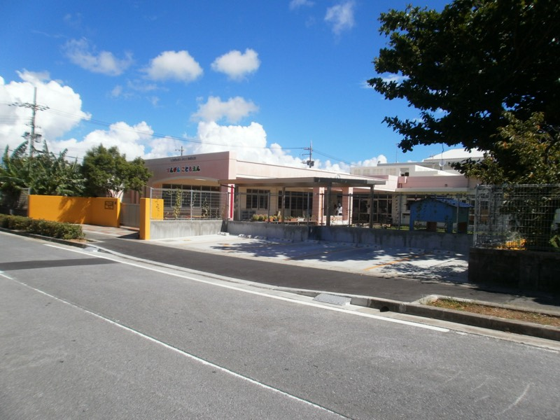
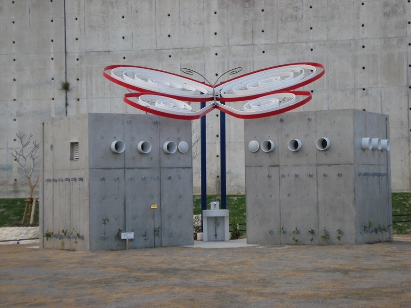
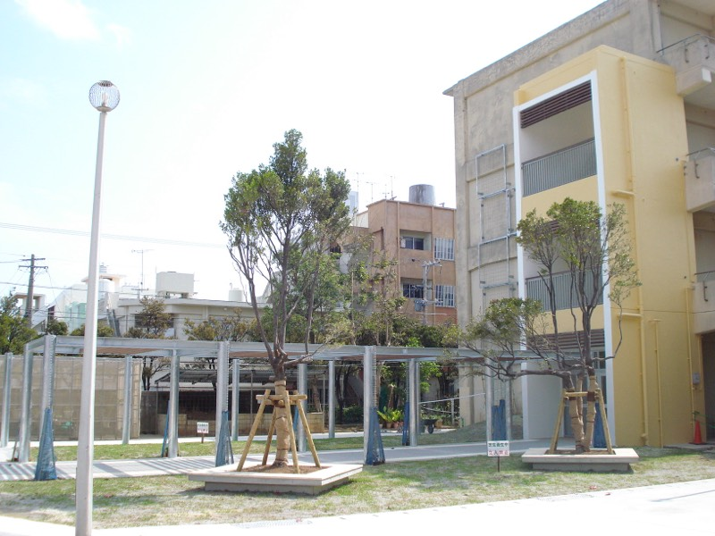
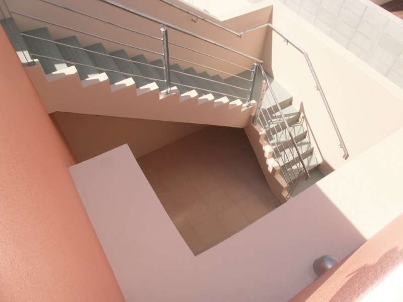
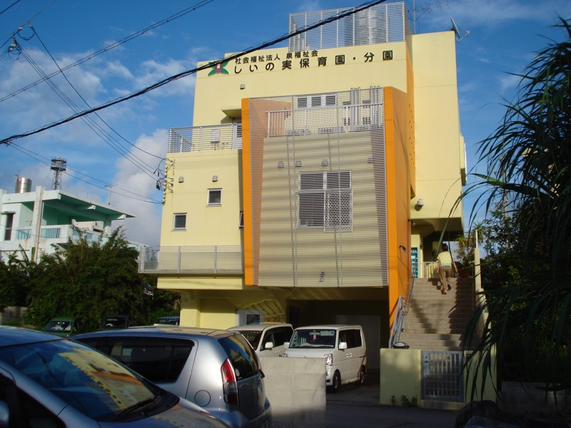
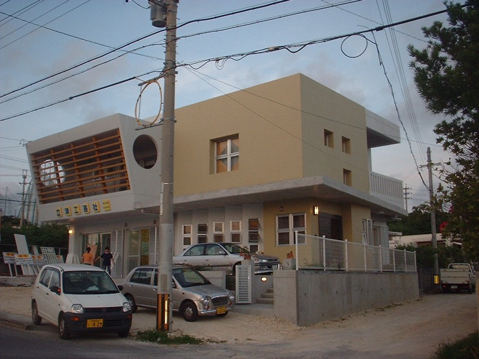
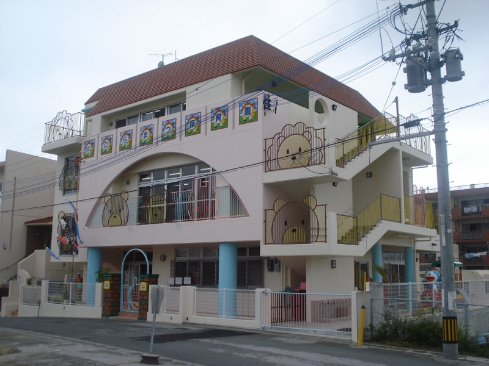

沖縄の光と風を
建築に込めて
一級建築士事務所タクト設計は、沖縄県那覇市を拠点に、住宅・店舗・公共施設など幅広い建築の設計監理を手がけています。
「タクト」とは、指揮者が振る指揮棒のこと。お客様の想いを汲み取り、沖縄の豊かな自然環境と調和する建築を、確かな技術と丁寧な対話で形にしていきます。
1984年に建築の道へ進んだ一級建築士・羽地敏博は、1991年に一級建築士事務所タクト設計を設立。以来30年以上にわたり、亜熱帯の気候風土を熟知した設計で、快適で長く愛される空間をご提案しています。お客様一人ひとりの想いに向き合い、土地の個性を活かした建築を丁寧に設計します。
設計理念
沖縄の自然と時間が
穏やかに流れる建築を。
私たちは、建築は風景の一部であると考えています。沖縄の強い日差し、心地よい風、豊かな緑――この土地の持つ力を活かし、住まう人の生活に寄り添いながら、美しく機能的な空間を設計します。構造の安全性、環境への配慮、そして細部にまで宿る美意識。すべてが調和した建築を目指しています。
業務内容
住宅設計
沖縄の気候風土に適した住宅を設計します。RC造・木造・鉄骨造など、敷地条件やご要望に最適な構造をご提案。新築からリノベーションまで対応いたします。
店舗・商業施設設計
飲食店、物販店、オフィスなど、事業のコンセプトを空間として表現します。集客力と機能性を兼ね備えた設計で、お客様のビジネスを支えます。
設計監理・公共施設
設計図通りに施工が行われているか、品質・工程・コストを管理します。公共施設や福祉施設など、規模を問わず対応。お客様に代わって現場をチェックします。
設計実績
掲載実績は一部です。用途や規模に応じた事例は、お打ち合わせ時にご案内しています。









住宅設計実績
- H邸（木造／二世帯住宅）準備中
- N邸（RC造／中庭住宅）準備中
- K邸（混構造／海を望む住宅）準備中
- つきしろの住宅
保育園実績
- しいの実保育園（本園）
- 愛の園保育園準備中
- しいの実保育園（分園）
- スカイマリン保育園（本園）準備中
- さつき保育園準備中
- ひらまつ保育園
- ひまわりっ童保育園準備中
- おなが保育園準備中
- スカイマリン保育園（分園）準備中
- メルシー保育園古島準備中
- もりのこ保育園準備中
- 座安こども園（厨房改修工事）準備中
- てんがんこどもえん増築工事
- 上間さつき保育園準備中
公共工事実績
- 真嘉比東公園便所
- 若狭小学校園庭計画
- 防災避難施設整備工事・設計監理準備中
店舗・社屋設計実績
- （株）的エンタープライズ 本社準備中
- 立津工芸社（宮古の事務所兼住宅）
ご依頼の流れ
お問い合わせ・ご相談
まずはお電話またはお問い合わせフォームからご連絡ください。ご相談は無料です。建築に関するお悩みやご要望をお聞かせください。
無料相談ヒアリング・敷地調査
ご家族の暮らし方やご予算、敷地の条件を丁寧にお伺いし、現地調査を行います。
基本設計・プラン提案
ヒアリング内容をもとに、間取りや外観のプランをご提案。納得いただけるまで何度でも打ち合わせを重ねます。
実施設計・確認申請
詳細な設計図面を作成し、建築確認申請の手続きを行います。
施工・工事監理
信頼できる施工会社と連携し、設計意図が現場に正確に反映されるよう監理を行います。
竣工・お引き渡し
完成検査を経て、お引き渡し。その後もメンテナンスや増改築のご相談に対応いたします。
アフターフォローお問い合わせ
まずはお気軽にご相談ください
沖縄県那覇市銘苅３丁目１９−１
※土日祝は事前予約にて対応